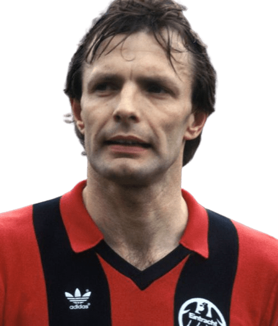
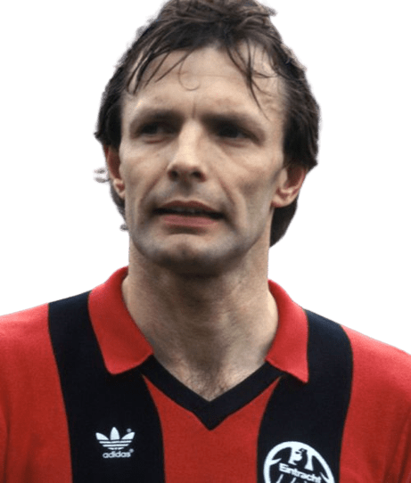

Maior campeão
Bayern de Munique - 31 títulos
Último campeão
Bayern de Munique
Maior artilheiro
Gerd Müller - 365 gols

Jogador com mais partidas
Karl-Heinz Körbel - 602 jogos
Bayern de Munique - 31 títulos
Bayern de Munique
Gerd Müller - 365 gols
Karl-Heinz Körbel - 602 jogos
